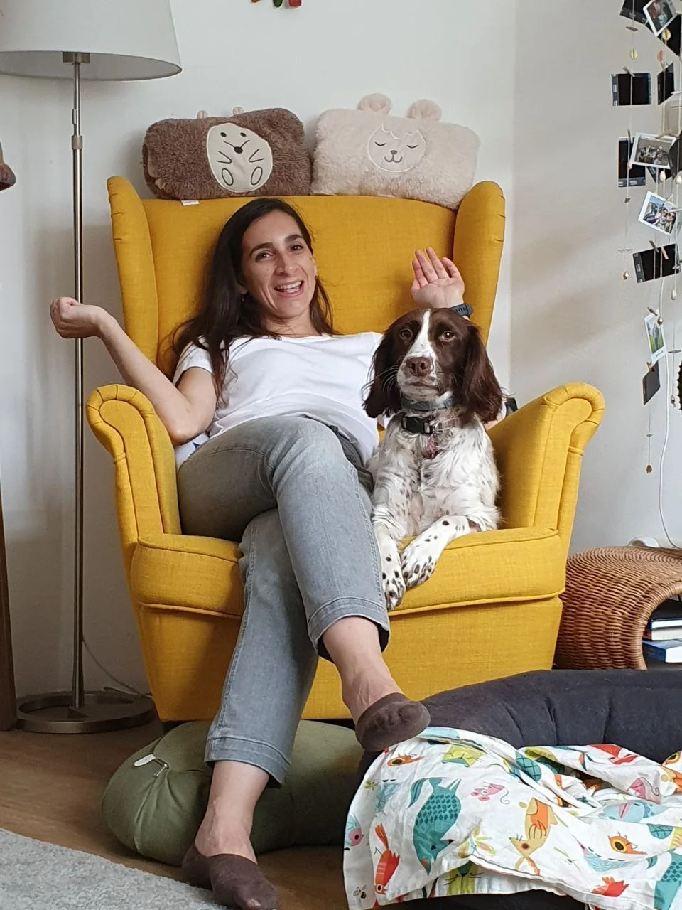

01 / We design together
Shared understanding
We work closely to ensure your research vision is accurately translated into clear, high-quality scientific visuals.

About Tatiana
Welcome to my portfolio. I am a scientific designer and illustrator with a PhD in Materials Science. My research background gives me the vocabulary to understand complex subjects and translate them into clear, accessible and engaging visuals and animations through storytelling.
Through illustration and animation, I reveal structures, processes and ideas that are often difficult to see. My goal is to bring science to life for audiences ranging from specialists to curious non-scientists.
The name SpoTStudio was inspired by Nina’s spots. She is my loyal companion behind every creation and the studio mascot, following each project closely from beginning to end and inspiring me along the way.
Beyond the lab, I believe that science can be experienced not only through data, but also visually—as a form of art.
01 / We design together
We work closely to ensure your research vision is accurately translated into clear, high-quality scientific visuals.
02 / Reliable delivery
An efficient process from concept to final version, supporting tight deadlines for publications, thesis submissions and grant proposals.
03 / Scientific expertise
Expertise across academic and industrial research environments informs every collaboration and helps me translate your science accurately.
Selected background
A compact view of the experience that informs my scientific illustration and visual communication practice.
Education
Selected experience
Communication & recognition
Curious about the work?
Explore the portfolio